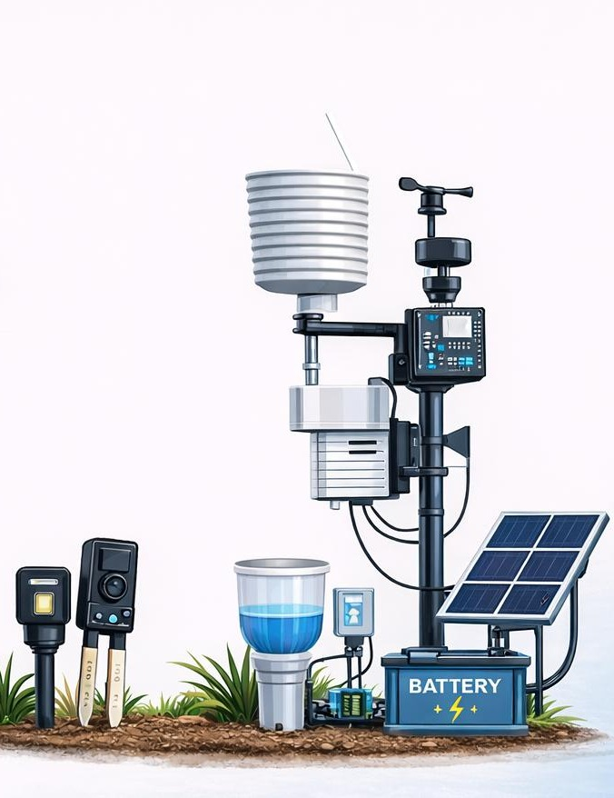
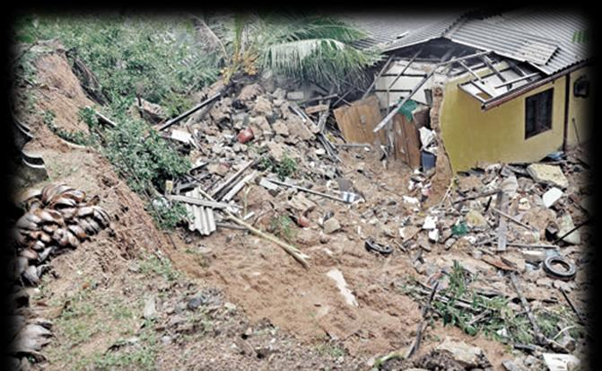
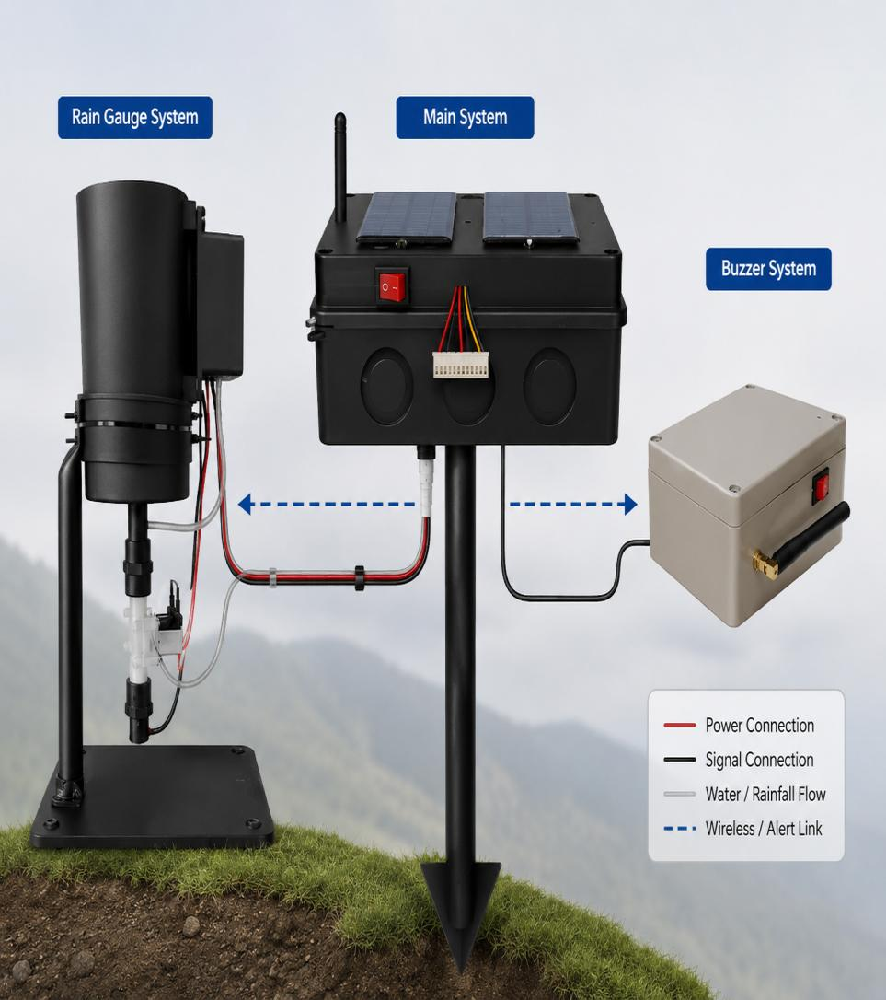

Monitoring coverage is limited
Existing monitoring systems are not available in every vulnerable area.
An IoT-based landslide early detection system that combines edge artificial intelligence, automated rainfall monitoring and environmental sensors to support fast, reliable risk alerts in landslide-prone areas of Sri Lanka.

Landslides are a recurring natural hazard in Sri Lanka, particularly in hilly, high-rainfall regions. The proposed system focuses on earlier detection through continuous sensor monitoring and local processing.

Landslides can cause deaths, property damage, infrastructure loss and environmental destruction.
Existing monitoring systems are not available in every vulnerable area.
Weak mobile or internet coverage can slow cloud-dependent warning delivery.
Continuous manual observation is impractical for reliable, real-time detection.
The research gap highlights the need to combine rainfall, soil conditions and ground movement instead of relying on only one or two factors.
The project proposes a compact IoT monitoring station where edge-based AI processes sensor data locally. The system combines rainfall, soil moisture and ground movement data, with solar power and low-energy operation intended to support continuous field monitoring.
Runs prediction locally for faster response and reduced internet dependency.
Combines soil moisture, rainfall, vibration/tilt and location information.
Designed around solar power and low-energy field hardware.

The main objective is to design and develop an IoT-based landslide early detection system using edge AI for landslide-prone areas in Sri Lanka.
Analyze landslide-prone areas and identify key factors that influence landslide events.
Process sensor data locally to support fast prediction and warning generation.
Combine sensors for soil moisture, rainfall and ground movement into a practical field monitoring setup.
Sensor readings are sent to the main controller for local AI processing, then communicated through LoRa / GSM / Wi-Fi to the monitoring and alert layer.
Review the research problem, gap, objectives, literature comparison and system methodology.